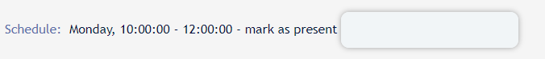
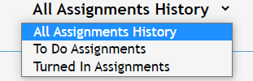
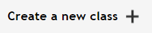
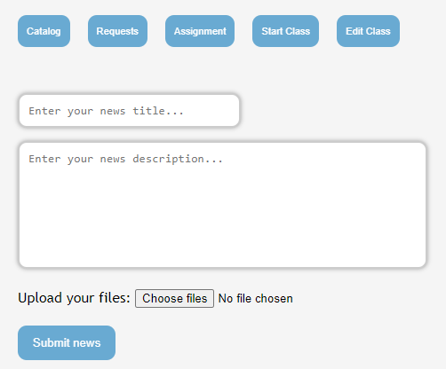

Class Manager is a web product made for use in an academic context, representing a component of managing students, respectively their activity.
The purpose of this web site is to create a web solution to easily manage the teaching activity of a group of students in the online environment.
The following sections present a discussion regarding the use and functionality of the project and the use classes to which it is addressed: students and teachers.
As stated above, Class Manager addresses especially to teachers and their students. Both parties can benefit of the web site’s functionalities once they are logged into their account.
Any new client has the opportunity to sign up by filling a register form linked below the login form from the landing page.
It is important to specify the wanted account type in order to perform needed actions on the platform.
After authentication the student is redirected to their personal work-space containing all of the classes they are attending.
Above the section of the courses they’re signed up to, a student can enter any valid id of a class in order to send their teacher a request to sign up, which requires teacher’s approval
After selecting any of the courses, the student is redirected to its dedicated page containing all necessary information regarding the course along with the grades they obtained. Other than that, a student can find latest teacher’s post and assignments considering the specific topic involved and download the attachments if needed.
The students will mark their presence to class by entering a valid code received from their teacher.
A student can access their assignments by either entering the course page or the ”Assignments” section. This page contains all student’s assignments (from all classes they’re taking) which can be viewed in a sorted manner by choosing from the drop down an option.
After selecting one of the assignments the student meets an area where they can upload useful files regarding their work and submitting them, by pressing the submit button, in order to get graded.
After authentication the teacher is redirected to their personal work-space containing all of the classes they are owning.
Above the section of the courses they’re teaching, a teacher can create a new class by filling a form requesting information about the new class.
In the homepage, the teacher can press the ”plus” button below the navigation bar. Therefore, they are sent to a form requiring the new class information.
The teacher must provide information describing the class. The fields ”Classlink” refers to the teacher’s personal web site and ”Other platforms” refers to other platforms that are going to be used along the course’s progress. It is recommended to fill these fields with useful links, but not necessary.
”Number of components” demands the number of grades that are going to be assigned to the students along the course as they participate, the maximum number being 5.
”Formula” demands a mathematical formula that is going to be used for computing the students final grades. This formula must meet an imposed standard for it to be accepted by the website.
Depending on how many components the teacher chooses, the formula must contain the same amount of variables, nothing more, nothing less. Another detail to remember is that the variables must be the first ’x’ letters of the alphabet, where x represents the number of components chosen.
As an example : Let’s say a teacher chooses 3 components. A valid formula would look something like this : (a+b+c)/3 or (a*0.3+b*0.7)/c, etc. Any formula containing something else other then a, b or c in this case will make the formula invalid and therefore the creation of class will not pass.
After selecting any of the courses, the teacher is redirected to its dedicated page containing all necessary information regarding the course along with the class id which will be used by students to send sign up requests to class and a presence code which will be used by students for presence validation. The presence code can be generated by pressing the ”Start Class” button inside the panel area.This action’s result ends in creating a new random code whose validity lasts for 10 minutes.
"Catalog” button redirects the teacher to the catalog of the class containing the students following the course along with their grades that can be modified by clicking and entering them in the fields. Changes will not be taken into consideration if the ”save” button is not pressed. In this page, you will also find 3 more buttons, which are 3 different types of export (CSV, HTML or PDF) of the catalog you are looking at.
”Assignment” button redirects the teacher to a new form for creating an assignment.
”Edit class” button redirects the teacher to a form for updating the current course information.
In the panel area the teacher can create posts for their students and add attachments to it if wanted.
Other than that, the teacher can find a hierarchy of all of the posts and assignments they created.
In the bottom of the Course’s page the teacher can find a section with all of the assignments they ever posted. By selecting any of them, they are redirected to a new page where they can view their students work and download their files by clicking the box associated with the turned in assignment.
More technical information regarding the Class Manager Web Site can be found at : Tehnical raport